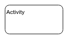
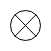

Principaux éléments graphiques
| Nom | Représentation | Description |
|---|---|---|
| Activity |  | Elément permettant de regrouper un ensemble d'actions. |
| Action |  |
Elément permettant de représenter une tâche. |
| Initial Node |  |
Représente le début d'un ensemble d'actions. |
| Activity Final Node |
Représente la fin d'un ensemble d'actions. |
|
| Flow Final Node |  |
Représente la fin d'un sous-ensemble d'actions. |